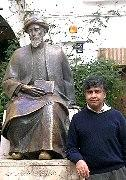

News Archive, 2005
| Docteur Alnoor Dhanani présente Moise Maimonides Juin 2005 Un séminaire d’une journée intitulée ‘Moise Maimonides: Combler les Divisions’ a eu lieu au Collège Universitaire de Londres le 19 Juin pour la commémoration du 800ème anniversaire de la mort du penseur religieux juif Maimonides et la célébration de son héritage au monde juif et musulman. Docteur Alnoor Dhanani, Directeur de notre programme d’enseignement supérieur, a fait un exposé sur ‘Repenser Maimonides, Critique du Kalam’ à une audience de religions diverses. | ||||||
Connu en Hébreu en tant que Moshe ben Maimon et en arabe en tant que Mousa ibn Maimon, Moses Maimonides était un important philosophe juif, théologien et leader de la communauté juive pendant le 12ème siècle avant JC. Il est né en 1135 avant JC à Cordoba, un grand centre de la culture islamique et de la connaissance juive, à l’apogée de ‘l’Age d’Or’ des musulmans et des juifs en Espagne. Dans ce milieu, Maimonides a étudié la science, la médecine, la philosophie arabo-islamique, qui était connue comme falasifa, et la tradition religieuse juive.
Historiquement juifs et musulmans partagent un héritage culturel unique. La vie de Maimonides est le meilleur symbole de ce passé commun et de l’habilité du genre humain pour transcender et dépasser l’intolérance, la haine, le fanatisme et l’ignorance. Il a été le produit d’une ère éclairée de tolérance religieuse et d’une co-existence culturelle entre juifs et musulmans.
Organisée par la Fondation Maimonides en association avec l’assemblée des Synagogues Masorti en Grande-Bretagne, les présentations de la journée ont impliquées des étudiants, des philosophes, des scientifiques, des membres de la communauté locale pour discourir sur l’héritage de la philosophie islamique et des contributions spécifiques de Maimonides.
Dans sa présentation, Dr Dhanani a noté que, vers la fin de sa vie, Maimonides a composé, le ‘Guide des Perplexes’, son œuvre maîtresse et le tournant de la philosophie médiévale rationnelle juive, pour son élève Joseph. Son objectif a été d’informer Joseph sur la manière de comprendre les aspects allégoriques de l’écriture sainte juive et d’être capable de déterminer la validité des points de vue métaphysiques performants, l’étude des affaires divines et la philosophie naturelle qui ont été détenus par le falasifa (néoplatoniste-aristotélicien philosophes islamiques tels que Ibn Sina al-Farabi, Ibn Bajja, Ibn Rushd qui, à travers la traduction des études grecques en arabique, ont accepté le système aristotélicien du monde avec quelques modifications néo platoniques) et les Mutakallimum (théologiens philosophes, principalement musulmans, mais également les scientifiques Qaraite Juifs).
Dans le Guide, qui est écrit en arabe, Maimonides note l’importance et l’influence des falasifa sur son système de pensée et critique les Mutakallimun, comme les Mu’tazilites et les Ash’arites, qui ont rejeté les points de vues des falasifa.
Dr Dhanani a noté que Maimonides était engagé sur la position des falasifa et a élaboré que leur système ne discutait pas seulement de ce que nous aurions considéré aujourd’hui comme étant des questions philosophiques, mais il incluait également des aspects de la science naturelle que nous ne considérons plus comme étant valide, par exemple l’univers géocentrique et le rejet du principe de la matière constituée sans atomes. Les Falasifas étaient également engagés sur la discussion de matières théologiques, telles que la nature de Dieu et son activité dans le monde. Leur vision de l’activité de Dieu dans le monde est, qu’étant donné que les événements dans le monde ont des causes naturelles, l’activité directe de Dieu est très limitée et, en fait, là où Dieu peut agir, Il doit le faire nécessairement, ce qui sous-entend sans en avoir le choix.
Comme ces semblables falasifa, Maimonides était contre le système des Mutakallimuns, qui, malgré leur engagement fondamental envers les questions théologiques, étaient également intéressés par les questions concernant la science naturelle et la philosophie. Leur point de vue sur la matière était qu’elle est constituée sans atomes. A la différence des Falasifa, les Mutakallimuns rejetaient les causes naturelles et au contraire pensaient que les événements dans le monde étaient le fruit de l’intervention divine, en d’autres termes la volonté et l’intention divine à ce que les événements se produisent. Certains Mutakallimuns acceptaient que les êtres humains puissent être la cause des événements dans le monde, par exemple quand ils lançaient une balle ou frappaient un objet ou une personne.
Dr Dhanani a mis en valeur que l’opposition entre les Falasifas et les Mutakallimuns reflétait un débat antérieur entre les grecques Atomistes et ceux qui les opposaient, les plus fameux de ceux là étant les adeptes d’Aristote. Dans ce débat antérieur, la position des atomistes était que les choses arrivaient par la chance ou par la rencontre hasardeuse des atomes et qu’il n’y avait donc pas d’ordre dans le monde. De l’autre côté, les aristotéliciens pensaient qu’il y a une raison et un but dans le monde naturel et que cela veut dire que l’ordre prévaut. Ainsi Maimonides considérait l’explication des Mutakallimun qui rejetaient les causes naturelles en faveur des causes divines, comme n’ayant pas d’ordre, ce qu’il sous-entendait par ordre naturel tel qu’il était compris par les adeptes d’Aristote.
En concluant sa présentation Dr Dhanani a remarqué que la question de la raison et de l’ordre sont toujours d’actualité de nos jours dans les discutions de l’évolution de Darwin et dans la physique quantique. “Il me semble que malgré notre avance et notre évolution depuis l’aristotélisme, Kalam et Falsafa, nous sommes toujours ‘perplexe’ et dans le besoin d’un Maimonides des temps modernes pour nous guider.”
La fondation maimonide est une organisation multi croyante juive-musulmane qui s’efforce d’encourager la compréhension, le dialogue et la coopération entre juifs et musulmans à travers la culture, les programmes académiques et éducationnels basés sur le respect mutuel et la confiance. |

Last updated: 23/02/2006 20:29
 Entrée
Entrée